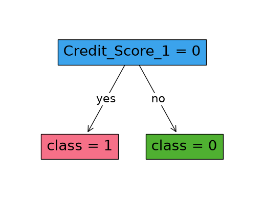
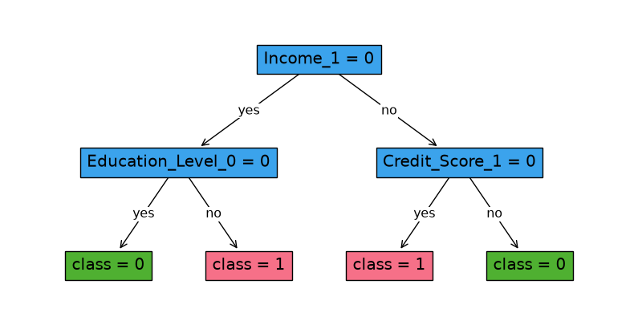
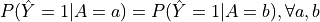
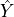
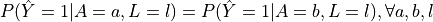
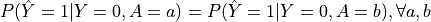
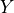
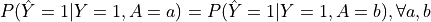
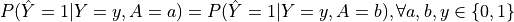

[1]:
import numpy as np
import pandas as pd
import matplotlib.pyplot as plt
from sklearn.datasets import make_classification
from sklearn.model_selection import train_test_split
from odtlearn.fair_oct import FairSPOCT
from odtlearn.utils.binarize import Binarizer, binarize
FairConstrainedOCT Examples¶
Introduction¶
The goal of this notebook is to demonstrate how users can utilize the FairConstrainedOCT classes in the ODTlearn package to learn fair optimal classification trees. We will focus on the FairSPOCT class, which enforces statistical parity, and show how different parameter values affect the learned tree structure and fairness metrics. Additionally, we will introduce other fairness metrics available in the package.
Loan Approval Dataset¶
In this example, we generate a synthetic dataset related to loan approval decisions. The dataset has 5 features: Income, Credit_Score, Employment_Status, Education_Level, and Previous_Default. The target variable is Loan_Approval, which indicates whether a loan application is approved (1) or denied (0). We also include a protected attribute, Gender, to simulate a fairness-related scenario.
When using the FairSPOCT class to learn fair optimal decision trees, there are several key parameters to consider:
depth: This parameter controls the maximum depth of the decision tree. A larger depth allows for more complex trees, but may lead to overfitting. It’s recommended to start with a small depth (e.g., 2 or 3) and gradually increase it while monitoring the performance on a validation set.
_lambda: This is the regularization parameter that balances the trade-off between accuracy and tree complexity. A higher value of _lambda encourages simpler trees. It’s typically set to a small value (e.g., 0.01 or 0.1) to prevent overfitting. You can tune this parameter using cross-validation.
fairness_bound: This parameter controls the strictness of the fairness constraint. A value of 1 means no fairness constraint is enforced, while smaller values enforce stricter fairness constraints. The choice of fairness_bound depends on the desired level of fairness and the trade-off with accuracy. It’s recommended to start with a value close to 1 and gradually decrease it while monitoring the fairness metrics and accuracy.
The other parameters in the FairSPOCT class include:
solver: The solver to use for the optimization problem. We use “gurobi” in this example, but you can also use “cbc”.
positive_class: The value of the class label corresponding to the desired outcome. In this case, we set it to 1, representing loan approval.
time_limit: The maximum time (in seconds) allowed for solving the optimization problem.
num_threads: The number of threads the solver should use. If set to None, it will use all available threads.
obj_mode: The objective to be used for learning the optimal decision tree. We set it to “acc” to optimize for accuracy, but you can also use “balance” for balanced accuracy or even “weighted” to specify your own weights for each observation.
verbose: If set to True, the solver will display verbose output during the optimization process.
[2]:
n = 50
rng = np.random.default_rng(seed=42)
X, y = make_classification(n_samples=n, n_features=4, n_informative=2,
n_redundant=1, n_classes=2, weights=[0.7, 0.3], shuffle=False, random_state=42)
# Create a DataFrame with feature names
df = pd.DataFrame(X, columns=['Income', 'Credit_Score', 'Employment_Status', 'Education_Level'])
df['Previous_Default'] = rng.choice([0,1,], size=n, p = [0.9, 0.1])
df['Loan_Approval'] = y
# Add a protected attribute (e.g., Gender)
df['Gender'] = rng.choice(['Male', 'Female'], size=n, p=[0.6, 0.4])
We will inject some arbitrary unfairness in the dataset. Assuming that there is a pay gap between men and women in the population due to historical bias, we will reduce the “Income” column for half the women in the dataset to show how unfairness can occur in a tree.
[3]:
female_indices = df.index[df['Gender'] == 'Female']
female_indices = rng.choice(female_indices, size=len(female_indices)//2, replace=False) # Take only half
# Give half -1 to income (1 standard deviation below mean)
df.loc[female_indices, 'Income'] -= 1
We then split the data into training and testing sets
[4]:
# Split the data into training and testing sets
X_train, X_test, y_train, y_test, gender_train, gender_test, prev_default_train, prev_default_test = train_test_split(
df.drop(['Loan_Approval', 'Previous_Default', 'Gender'], axis=1),
df['Loan_Approval'],
df['Gender'],
df['Previous_Default'],
test_size=0.2,
random_state=42
)
Next we use the Binarizer class to transform the features to binary features. Note that many of these features would likely be encoded as categorical or binary features in real data, but for our toy example we will pretend they are all continuous features.
[5]:
# Binarize continuous features
feat_binarizer = Binarizer(
real_cols=['Income', 'Credit_Score', 'Employment_Status', 'Education_Level'], n_bins=3
)
X_train_bin = feat_binarizer.fit_transform(X_train)
X_test_bin = feat_binarizer.transform(X_test)
X_train_bin.columns # See the columns created by the binarizer
[5]:
Index(['Income_0', 'Income_1', 'Income_2', 'Credit_Score_0', 'Credit_Score_1',
'Credit_Score_2', 'Employment_Status_0', 'Employment_Status_1',
'Employment_Status_2', 'Education_Level_0', 'Education_Level_1',
'Education_Level_2'],
dtype='str')
Learning Fair Optimal Classification Trees with Statistical Parity¶
Let’s investigate the effect of different fairness bound values on the learned tree structure and fairness metrics.
Initialize FairSPOCT classifier with a less strict fairness bound¶
[6]:
fcl_less_strict = FairSPOCT(
solver="gurobi",
positive_class=1,
depth=2,
_lambda=0.05,
time_limit=60,
fairness_bound=0.2,
num_threads=None,
obj_mode="acc",
verbose=False,
)
Restricted license - for non-production use only - expires 2027-11-29
Set parameter TimeLimit to value 60
[7]:
# Fit the classifier
fcl_less_strict.fit(X=X_train_bin,
y=y_train.values,
protect_feat=gender_train.map({'Male': 0, 'Female': 1}).values.reshape(-1,1),
legit_factor=prev_default_train.values)
Gurobi Optimizer version 13.0.2 build v13.0.2rc1 (linux64 - "Ubuntu 24.04.4 LTS")
CPU model: AMD EPYC 9V74 80-Core Processor, instruction set [SSE2|AVX|AVX2]
Thread count: 2 physical cores, 4 logical processors, using up to 4 threads
Non-default parameters:
TimeLimit 60
Optimize a model with 1696 rows, 897 columns and 5674 nonzeros (Max)
Model fingerprint: 0x054b7155
Model has 316 linear objective coefficients
Variable types: 14 continuous, 883 integer (883 binary)
Coefficient statistics:
Matrix range [4e-02, 1e+00]
Objective range [5e-02, 9e-01]
Bounds range [1e+00, 1e+00]
RHS range [2e-01, 1e+00]
Found heuristic solution: objective 27.5500000
Presolve removed 910 rows and 353 columns
Presolve time: 0.04s
Presolved: 786 rows, 544 columns, 3281 nonzeros
Variable types: 12 continuous, 532 integer (530 binary)
Root relaxation: objective 3.787500e+01, 315 iterations, 0.00 seconds (0.00 work units)
Nodes | Current Node | Objective Bounds | Work
Expl Unexpl | Obj Depth IntInf | Incumbent BestBd Gap | It/Node Time
0 0 37.87500 0 100 27.55000 37.87500 37.5% - 0s
0 0 36.96111 0 246 27.55000 36.96111 34.2% - 0s
0 0 36.94759 0 236 27.55000 36.94759 34.1% - 0s
0 0 36.94487 0 236 27.55000 36.94487 34.1% - 0s
0 0 36.93938 0 222 27.55000 36.93938 34.1% - 0s
H 0 0 32.2000000 36.93929 14.7% - 0s
0 0 36.93929 0 222 32.20000 36.93929 14.7% - 0s
0 0 36.92683 0 236 32.20000 36.92683 14.7% - 0s
0 0 36.92000 0 239 32.20000 36.92000 14.7% - 0s
0 0 36.91250 0 189 32.20000 36.91250 14.6% - 0s
0 0 36.90000 0 155 32.20000 36.90000 14.6% - 0s
0 0 36.90000 0 115 32.20000 36.90000 14.6% - 0s
0 0 36.90000 0 113 32.20000 36.90000 14.6% - 0s
0 0 36.90000 0 147 32.20000 36.90000 14.6% - 0s
0 0 36.90000 0 145 32.20000 36.90000 14.6% - 0s
0 0 36.87955 0 209 32.20000 36.87955 14.5% - 0s
0 0 36.87955 0 208 32.20000 36.87955 14.5% - 0s
0 0 36.87955 0 193 32.20000 36.87955 14.5% - 0s
H 0 0 34.1000000 36.87955 8.15% - 0s
0 0 36.87845 0 190 34.10000 36.87845 8.15% - 0s
0 0 36.87845 0 196 34.10000 36.87845 8.15% - 0s
0 0 36.82500 0 178 34.10000 36.82500 7.99% - 0s
0 0 36.72500 0 202 34.10000 36.72500 7.70% - 0s
0 0 36.72500 0 191 34.10000 36.72500 7.70% - 0s
0 0 36.72500 0 188 34.10000 36.72500 7.70% - 0s
0 0 36.72500 0 197 34.10000 36.72500 7.70% - 0s
0 0 36.72500 0 163 34.10000 36.72500 7.70% - 0s
0 0 36.72500 0 163 34.10000 36.72500 7.70% - 0s
0 0 36.72500 0 163 34.10000 36.72500 7.70% - 0s
0 2 36.67500 0 163 34.10000 36.67500 7.55% - 0s
H 13 10 34.1500000 36.42500 6.66% 53.7 0s
Cutting planes:
Implied bound: 1
Clique: 63
MIR: 2
Zero half: 64
Relax-and-lift: 1
Explored 47 nodes (4541 simplex iterations) in 0.37 seconds (0.31 work units)
Thread count was 4 (of 4 available processors)
Solution count 4: 34.15 34.1 32.2 27.55
Optimal solution found (tolerance 1.00e-04)
Best objective 3.415000000000e+01, best bound 3.415000000000e+01, gap 0.0000%
[7]:
FairSPOCT(solver=gurobi,depth=2,time_limit=60,num_threads=None,verbose=False)
The fit function is used to train the fair optimal classification tree on the given dataset. It takes the following arguments:
X: The feature matrix containing the predictive features for each instance.y: The target vector indicating the class labels for each instance.protect_feat: The protected feature to be used for enforcing fairness constraints. In this example, we use the ‘Gender’ feature.legit_factor: The legitimate factor that can justify differences in outcomes across protected groups. In this example, we use the ‘Number_of_Defaults’ feature as the legitimate factor.
When choosing features for legitimate factors versus predictive features, consider the following:
Legitimate factors should be variables that are deemed acceptable to influence the outcome, even if they may result in differences across protected groups. These factors should be based on domain knowledge and societal norms. For example, in a loan approval scenario, the number of previous loan defaults might be considered a legitimate factor.
Predictive features, on the other hand, are variables that are used to make predictions but should not lead to unfair treatment of protected groups. These features should be carefully selected to avoid perpetuating biases or discrimination. For instance, while ‘Age’ and ‘Income’ might be predictive of loan approval, they should not be used in a way that unfairly disadvantages certain protected groups.
It is essential to engage with domain experts, stakeholders, and affected communities to determine which features should be considered legitimate factors and which should be used solely for prediction purposes. This helps ensure that the fair optimal classification tree aligns with the specific fairness requirements and societal expectations of the problem at hand.
In addition to looking at the progress log displayed when calling fit, we can check optimization statistics by looking at properties such as optim_gap and num_solutions.
[8]:
fcl_less_strict.optim_gap
[8]:
0.0
Next we calculate the fairness metric and accuracy on the test data.
[9]:
sp_metric = fcl_less_strict.calc_metric(
protect_feat=gender_test.map({'Male': 0, 'Female': 1}).values.reshape(-1,1),
y= fcl_less_strict.predict(X_test_bin))
[10]:
print("Statistical Parity on Testing Set (Less Strict Fairness Bound):")
print(pd.DataFrame(
sp_metric.items(),
columns=["(p,y)", "P(Y=y|P=p)"],
))
Statistical Parity on Testing Set (Less Strict Fairness Bound):
(p,y) P(Y=y|P=p)
0 (1, 0) 1.0
1 (0, 0) 0.5
2 (1, 1) 0.0
3 (0, 1) 0.5
[11]:
test_acc = np.mean(fcl_less_strict.predict(X_test_bin) == y_test)
print(f"Test Accuracy (Less Strict Fairness Bound): {test_acc:.3f}")
Test Accuracy (Less Strict Fairness Bound): 0.900
We can also plot the learned decision tree. Notice that we can pass shorter versions of the feature names to the plot_tree method to make the plot easier to read. We can also adjust the distance between levels of the tree using the distance argument.
[12]:
fig, ax = plt.subplots()
fcl_less_strict.plot_tree(ax=ax, distance=0.6)
plt.show()

Initialize FairSPOCT classifier with a stricter fairness bound¶
[13]:
fcl_strict = FairSPOCT(
solver="gurobi",
positive_class=1,
depth=2,
_lambda=0.05,
time_limit=60,
fairness_bound=0.01,
num_threads=None,
obj_mode="acc",
verbose=False,
)
Set parameter TimeLimit to value 60
[14]:
# Fit the classifier
fcl_strict.fit(X=X_train_bin,
y=y_train.values,
protect_feat=gender_train.map({'Male': 0, 'Female': 1}).values.reshape(-1,1),
legit_factor=prev_default_train.values)
Gurobi Optimizer version 13.0.2 build v13.0.2rc1 (linux64 - "Ubuntu 24.04.4 LTS")
CPU model: AMD EPYC 9V74 80-Core Processor, instruction set [SSE2|AVX|AVX2]
Thread count: 2 physical cores, 4 logical processors, using up to 4 threads
Non-default parameters:
TimeLimit 60
Optimize a model with 1696 rows, 897 columns and 5674 nonzeros (Max)
Model fingerprint: 0xa647e7c5
Model has 316 linear objective coefficients
Variable types: 14 continuous, 883 integer (883 binary)
Coefficient statistics:
Matrix range [4e-02, 1e+00]
Objective range [5e-02, 9e-01]
Bounds range [1e+00, 1e+00]
RHS range [1e-02, 1e+00]
Found heuristic solution: objective 27.5500000
Presolve removed 913 rows and 355 columns
Presolve time: 0.04s
Presolved: 783 rows, 542 columns, 3275 nonzeros
Variable types: 12 continuous, 530 integer (530 binary)
Root relaxation: objective 3.613571e+01, 394 iterations, 0.01 seconds (0.01 work units)
Nodes | Current Node | Objective Bounds | Work
Expl Unexpl | Obj Depth IntInf | Incumbent BestBd Gap | It/Node Time
0 0 36.13571 0 189 27.55000 36.13571 31.2% - 0s
0 0 35.84762 0 183 27.55000 35.84762 30.1% - 0s
0 0 35.84762 0 184 27.55000 35.84762 30.1% - 0s
0 0 35.60119 0 221 27.55000 35.60119 29.2% - 0s
0 0 35.60000 0 183 27.55000 35.60000 29.2% - 0s
0 0 35.59286 0 200 27.55000 35.59286 29.2% - 0s
0 0 35.59286 0 200 27.55000 35.59286 29.2% - 0s
0 0 35.58273 0 238 27.55000 35.58273 29.2% - 0s
0 0 35.58268 0 236 27.55000 35.58268 29.2% - 0s
0 0 35.58268 0 242 27.55000 35.58268 29.2% - 0s
0 0 35.58268 0 241 27.55000 35.58268 29.2% - 0s
0 0 35.58259 0 224 27.55000 35.58259 29.2% - 0s
0 0 35.58237 0 224 27.55000 35.58237 29.2% - 0s
0 0 35.58237 0 206 27.55000 35.58237 29.2% - 0s
0 2 35.58237 0 206 27.55000 35.58237 29.2% - 0s
* 246 71 19 31.2000000 35.01000 12.2% 32.9 0s
Cutting planes:
Gomory: 12
Cover: 1
Implied bound: 4
Clique: 73
MIR: 2
Flow cover: 1
Inf proof: 1
Zero half: 60
RLT: 2
Explored 424 nodes (13583 simplex iterations) in 0.54 seconds (0.64 work units)
Thread count was 4 (of 4 available processors)
Solution count 2: 31.2 27.55
Optimal solution found (tolerance 1.00e-04)
Best objective 3.120000000000e+01, best bound 3.120000000000e+01, gap 0.0000%
[14]:
FairSPOCT(solver=gurobi,depth=2,time_limit=60,num_threads=None,verbose=False)
Checking the optim_gap again:
[15]:
fcl_strict.optim_gap
[15]:
0.0
[16]:
sp_metric = fcl_strict.calc_metric(
protect_feat=gender_test.map({'Male': 0, 'Female': 1}).values.reshape(-1,1),
y= fcl_strict.predict(X_test_bin))
[17]:
# Evaluate fairness and accuracy on the testing set
print("Statistical Parity on Testing Set (Stricter Fairness Bound):")
print(pd.DataFrame(
sp_metric.items(),
columns=["(p,y)", "P(Y=y|P=p)"],
))
Statistical Parity on Testing Set (Stricter Fairness Bound):
(p,y) P(Y=y|P=p)
0 (1, 0) 0.750000
1 (0, 0) 0.666667
2 (1, 1) 0.250000
3 (0, 1) 0.333333
[18]:
test_acc = np.mean(fcl_strict.predict(X_test_bin) == y_test)
print(f"Test Accuracy (Stricter Fairness Bound): {test_acc:.3f}")
Test Accuracy (Stricter Fairness Bound): 0.700
[19]:
fig, ax = plt.subplots(figsize=(10,5))
fcl_strict.plot_tree(ax=ax,distance=0.6)
plt.show()

Comparing the results of the two FairSPOCT classifiers with different fairness bound values, we can observe the following:
The classifier with a less strict fairness bound (0.2) allows for a larger difference in the probability of loan approval between males and females. The statistical parity metric shows that the probability of loan approval is higher for one gender group compared to the other.
In contrast, the classifier with a stricter fairness bound (0.01) enforces a much smaller difference in the probability of loan approval between males and females. The statistical parity metric is closer to being equal for both gender groups.
The decision trees learned by the two classifiers may differ in structure and the features used for splitting, as the stricter fairness bound constrains the tree learning process to ensure a more balanced outcome across the protected groups.
The accuracy of the classifier with a stricter fairness bound may be slightly lower compared to the classifier with a less strict fairness bound. This is because enforcing a stricter fairness constraint can limit the classifier’s ability to optimize for accuracy.
These observations demonstrate the trade-off between fairness and accuracy when using fairness constraints in decision tree learning. By adjusting the fairness bound value, users can control the level of fairness enforced in the learned tree, while considering the potential impact on accuracy.
Additional Supported Fairness Metrics¶
Now that we have seen how the FairSPOCT class can be used to learn fair optimal classification trees and the impact of the fairness bound on the learned trees and fairness metrics, let’s explore the other fairness metrics available in the ODTlearn package.
In the previous sections, we focused on using the FairSPOCT class to learn fair optimal classification trees with statistical parity constraints. However, the ODTlearn package provides implementations for several other fairness metrics, each capturing different aspects of fairness. These include:
FairCSPOCT: Enforces conditional statistical parity
FairPEOCT: Enforces predictive equality
FairEOppOCT: Enforces equal opportunity
FairEOddsOCT: Enforces equalized odds
Each of these classes follows a similar interface to FairSPOCT, with the main difference being the fairness metric they enforce.
Here’s an overview of each fairness metric and how it is calculated:
Statistical Parity (FairSPOCT):
Definition: A classifier satisfies statistical parity if the probability of receiving a positive outcome is equal across all protected groups.
Equation:


is the predicted outcome, and is the protected attribute.
Conditional Statistical Parity (FairCSPOCT):
Definition: A classifier satisfies conditional statistical parity if the probability of receiving a positive outcome is equal across all protected groups, conditioned on a set of legitimate factors.
Equation:

is the predicted outcome, is the protected attribute, and
 represents the legitimate factors.
represents the legitimate factors.
Predictive Equality (FairPEOCT):
Definition: A classifier satisfies predictive equality if the false positive rates are equal across all protected groups.
Equation:

is the predicted outcome,

is the true outcome, and is the protected attribute.
Equal Opportunity (FairEOppOCT):
Definition: A classifier satisfies equal opportunity if the true positive rates are equal across all protected groups.
Equation:

is the predicted outcome, is the true outcome, and is the protected attribute.
Equalized Odds (FairEOddsOCT):
Definition: A classifier satisfies equalized odds if both the true positive rates and false positive rates are equal across all protected groups.
Equation:

is the predicted outcome, is the true outcome, and is the protected attribute.
When applying fairness constraints to a decision tree, it is crucial to carefully choose a fairness metric that aligns with the specific use case and the societal or legal requirements of the problem at hand. Different fairness metrics capture different aspects of fairness and may lead to different trade-offs between fairness and accuracy.
For example, if the goal is to ensure that the overall proportion of positive outcomes is similar across protected groups, statistical parity (FairSPOCT) would be an appropriate choice. However, if the focus is on ensuring that the classifier makes similar mistakes across protected groups, predictive equality (FairPEOCT) might be more suitable.
It is important to note that achieving fairness in machine learning is a complex and ongoing process that requires careful consideration of the societal context, potential biases in the data, and the limitations of the chosen fairness metric. Engaging with domain experts, stakeholders, and affected communities is essential to understand the specific fairness requirements of the problem and select the most appropriate fairness metric or combination of metrics.